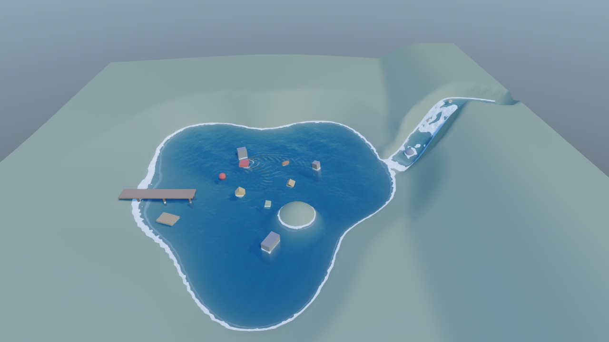
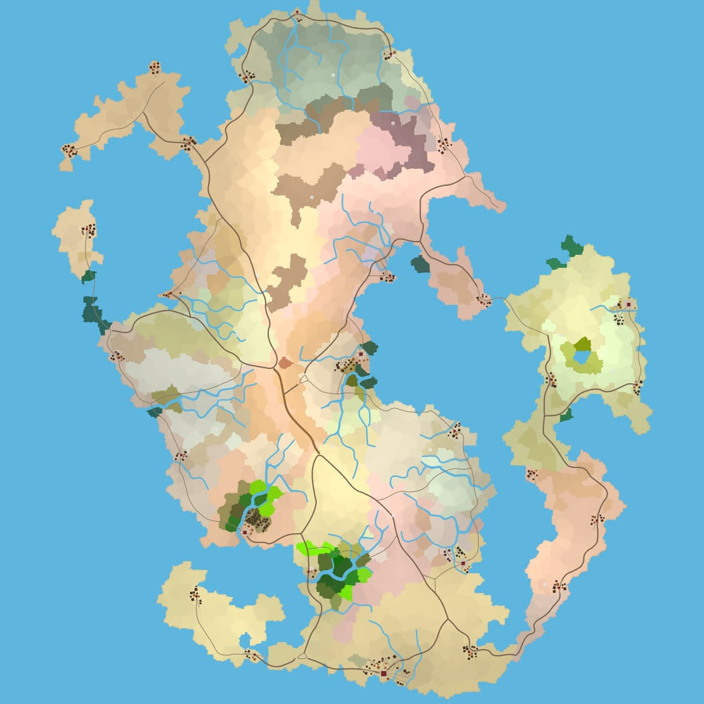

Small bricks, clean seams
Every subsystem is a standalone, header-only library with its own README and tests. An engine is what snaps them together.
open source · C++20 · Vulkan
toyengine is a 3D game engine with a deferred PBR renderer, physics, dynamic water and a Blender-style editor. mapcoopa generates whole fantasy worlds from a single seed.
↖ Gerstner waves on a grid of blocks. Move the cursor to make ripples.
Projects

A modern C++20 / Vulkan 3D game engine with a Blender-style editor. Deferred PBR, rigid-body and cloth physics, dynamic water, streamed procedural terrain, and an editor that writes exactly the files the game loads.
Explore toyengine
A seeded, header-only generator for whole fantasy worlds: terrain, 33 biomes, rivers, roads, nations, settlements, landmarks and caves. Same seed, same world, on every platform.
Explore mapcoopaMore projects on the way. The supporting libraries (gfxcoopa, physxcoopa, uicoopa, sfxcoopa, libcoopa) are open source on GitHub.
Engineering principles
Every subsystem is a standalone, header-only library with its own README and tests. An engine is what snaps them together.
Scenes, materials, worlds and settings are commented YAML. Binary appears only at package time, and loaders accept either.
Seeded output is byte-identical on Linux and macOS, thanks to portable random and sort functions and -ffp-contract=off.
The same wave math runs in the shader and in a CPU query, so gameplay agrees with what is on screen.
Each render feature has quality tiers and a master switch that costs nothing when disabled, with per-feature GPU and CPU profiling.
Suites run under ctest. Render tests use a never-mapped window, and parallel paths are checked against serial ones.
Blender's keymaps and modes, Unity's component model. Anyone who has used either already knows the editor.
Vulkan through thin RAII wrappers, from device objects up to the deferred renderer. Native on Linux, and on Apple Silicon through MoltenVK.
Every project and library here is on GitHub. Clone it, build it, break it, open an issue.